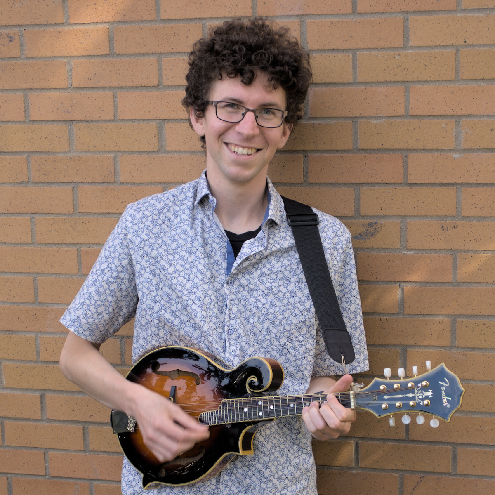

About
My name is Jacob deGroot-Maggetti. I work to bring people together through music. I'm also a teacher, learner, and programmer.
I'm a musician, and I work to bring people together through my music. I play several instruments, focusing particularly on violin, mandolin and guitar. I also sing.
I make music in a variety of genres, including trad (with a particular interest in Irish and Québécois fiddle styles), choral, jazz, Balinese gamelan, and classical (with a particular interest in early music). I work to bring people together by singing in and directing choirs, playing at and facilitating sessions, and playing for and participating in social dances.
I've sung in numerous choirs over the years, including church choirs, university ensembles, festival choirs, the Grand Philharmonic Choir and Chamber Choir, and the Orpheus Singers. Currently, I sing with Seraphim.
I have directed several choirs, acting as the director of the Ad Hoc, Post Hoc and Propter Hoc Chamber choirs as well as for a church choir, and serving as assistant conductor for the University of Waterloo Choir for several terms.
I'm active in the trad session scene around Montreal, doing what I can to build community, foster connections between musicians, and contribute to a welcoming atmosphere.
Over the years, I have spent a lot of time playing music for dancers. I was a member of the house band at the Hepcat Swing Dance Studio, where we regularly played music for social swing dances. I have played at ceili, contra, balfolk and English country dances. I'm a member of Les Quatre Patates, a Montreal-based band focused on playing for contra dances.
I have a B. A. in Music from the University of Waterloo and an M. A. in Music Theory from McGill University, where I studied the music of Canadian fiddle player Oliver Schroer.
Learn more about the music I make.
I am a teacher and a learner. I am always searching for more effective ways to think and work, and I've spent years learning about how people learn. I use this knowledge to acquire new skills and to learn about subjects that interest me.
I have decades of experience giving private music lessons, and offer lessons in violin, mandolin, guitar, and music theory, online and in-person in Montreal. In my teaching, I draw on my knowledge of evidence-based learning techniques as well as my own experiences learning new things. I work hard to meet students where they are and focus on building musical skills that are directly relevant to their goals.
I also offer tutoring in effective learning techniques.
I am a programmer. I worked for two years at the Distributed Digital Music Archives and Libraries Laboratory at McGill University, where I was lead developer for the CANTUS Database. I also do occasional freelance web development work.
Take a look at some of the things I've made.
I have a newsletter, and you can sign up to receive it here.